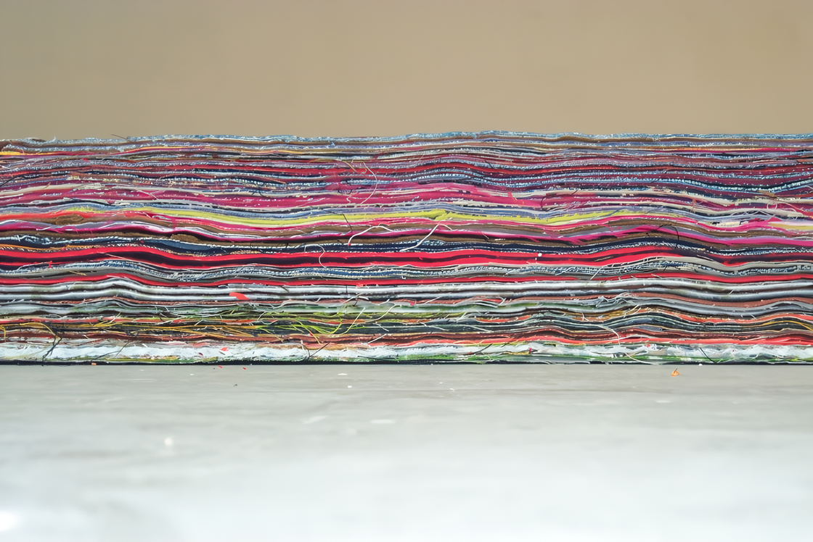
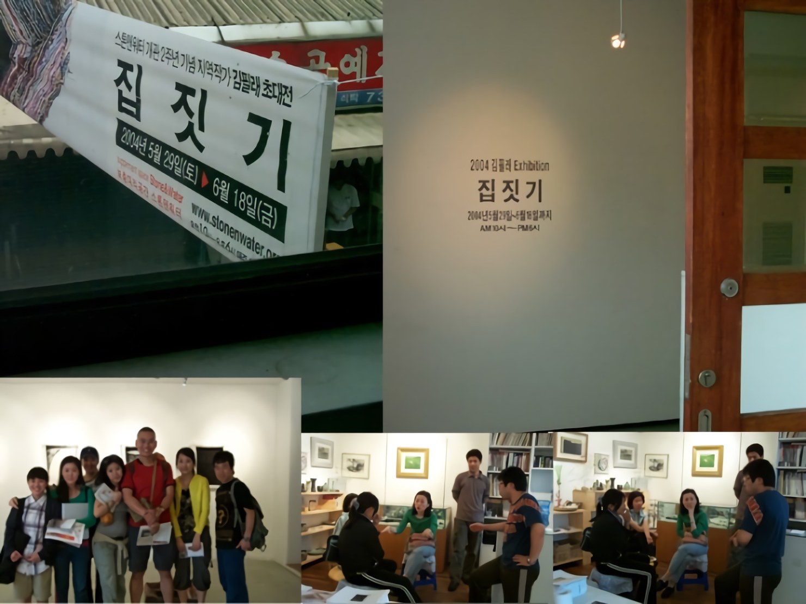

집짓기
김필래 조각展
2004 스톤앤워터 개관 2주년 기념 지역작가초대전
2004_0529 ▶ 2004_0618
_waifu2x_photo_noise3_scale.png)
초대일시_2004_0529_토요일_03:00pm
보충대리공간 스톤앤워터
경기도 안양시 만안구 석수2동 286-15번지 2층
Tel. 031_472_2886
의미의 중복, 변주가 이루어지는 대화적 공간 - 김필래 개인전에 부쳐 ● 2003년의 일곱 번째 개인전을 『집짓기』라 명명한 작가 김필래가 같은 주제로 2004년 여덟 번째 개인전을 마련하였다. 안양시 석수（石水）동 석수시장 내에 위치한 대안공간 "stone&water"의 개관을 기념하는 이 전시는 작가가 이 지역에서 자라났기 때문에 더욱 내밀한 의미를 지니고 있다．
_waifu2x_photo_noise3_scale.png)
_waifu2x_photo_noise3_scale.png)
몇 해전부터 꾸준히 면실, 솜, 천 등의 자연섬유를 이용해 온 김필래의 매우 회화적인 설치작업은 삶에 대한 자신의 방법을 표현한다. 가는 실이 둘둘 수없이 감겨져 이루어진 크고 둥근 점, 실을 차곡차곡 잇대어 이룬 면, 천을 올올이 풀어헤쳐 드리워진 선들을 통한 삶의 은유는 관람자의 상상적인 꼬리를 따라 이리저리로 이동한다. 그녀의 작업들이 표현의 과정들을 드러내주고 일정한 표현규칙들을 따르고 있기 때문에 작가가 표현하는 삶은 겉으로 보여지는 현실은 아니지만, 그러나 매우 실재적이다.
_waifu2x_photo_noise3_scale.png)
_waifu2x_photo_noise3_scale.png)
작가는 화가인 듯 조각가인 듯, 시인인 듯, 소설가인 듯, 연주자인 듯 또는 안무가인 듯 오래된 분류의 경계를 자유로이(그러나 조심스럽게) 넘나들며 가능한 독해(讀解)의 출구들을 열어놓는다. 따라서 그녀의 작업이 갖는 미덕은 삶의 의미를 증폭시키거나, 심화시키는 것이 아니라, 관람자의 개입에 의해 삶의 의미가 중복되거나 변주되는 연속적인 흐름을 만들어간다는 데 있다. 그래서 관람자와의 연합이나 인접, 이월(移越)등을 포용하는 개방적인 '김필래'의 작업을 만나게 되면 '일반적'인 견해가 실상은 얼마나 자기중심적이고 폐쇄적인지를 역설적으로 깨닫게 되는 것 아닐까?
_waifu2x_photo_noise3_scale.png)
_waifu2x_photo_noise3_scale.png)
작가 김필래의 '집'은 입체적인 의미를 지니고 있다. 견고한 형식의 외피에도 불구하고 팽창하는 내부를 견디지 못하는 균열하는 집, 언제나 그리운 쉼터같은 초월적인 집, 짜고 풀고를 거듭해야하는 반복과 지루함의 집, 솜처럼 포근한 생생한 감촉의 집... 작가가 직조하는 복수적(複數的)인 집들은 모두 부분으로만 식별될 수 있으나, 결합은 독창적이어서 의미를 단수（單數）로 결집시키는 것이 무의미해진다. 물론 시간적으로나 공간적으로 여기저기, 지금과 이전을 왔다갔다하더라도 작가의 집들은 익숙한 여러 문화적 맥락과 연결되어 있다. 이러한 상호관련성 또는 제약으로 인하여 관람자인 '우리'는 김필래의 집이 모호하다고 느끼는 것이 아니라, 그 집을 통과하여 각자의 의미망을 복수적(複數的)으로 구성할 즐거움을 지니게 된다. 그래서 김필래의 여덟 번째 개인전은 작가와 관람자가, 작품과 삶이 분리되지 않는 사회적 공간임을 경험하는 또 하나의 기회가 될 것이다.
■ 임정희

훈데르트 바서가 집을 짓는데 꼭 이렇게 짓더라 남들이 보면 좀 구질구질하다십게 그렇게 말이지 '모든 직선을 모든 곡선으로' 참 묘하지! 누군가 훈데르트 바서의 집을 이곳에 올렸을까? 그리고 누군가는도 김필래의 집짓기를 올렸을까? 마치 짜고 치는 고스톱처럼 말이지 안양석수동 구룡마을에서 태어나 지금까지 줄곳 석수동에 살며 꿈의 집을 짓는 한 사람이 있다네. 그이의 아버지는 14후퇴때 피난내려와 석수동 구룡마을에 장착을 했고 그곳에서 결혼하고 그이의 자식들을 낳고 자식들은 또 그자식들을 낳고 할테지... 김필래의 작업실은 관악역에서 내려 스톤앤워터를 오는 길목에 허름한 집 지하에 있었다네. 오래전부터 말이지... 누덕누덕하고 곰팍내가 약간 나는듯 한데 꼭 구조가 쿤스트하우스처럼 꿈틀거리는 모양일세. 그곳에서 그는 온갖가지 옷감을 주어다 잘게 잘게 잘라 '옷벽돌'을 만들어 한켜한켜 올리며 집을 짓는다네. 함 묘하지!
■박찬응
